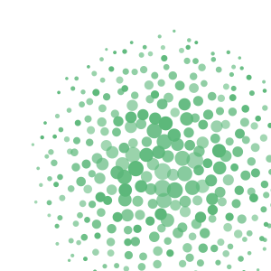
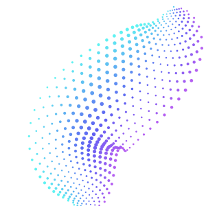

Information Systems IIB · INFO2001A
Choose your track
Flashcards, quizzes and full mock papers for databases, SQL, system design and C#. Pick a card to jump in.
Test 1
SQL + Database Design
Flashcards · Quiz · Mock papers
Test 2
Systems Design + Interaction Design + ADO.NET + Reporting
Flashcards · Quizzes · Mock papers

Database Fundamentals
Access SQL reference + DSD, wireframe and storyboard blueprints
Syntax · Joins · Functions · DSD · Wireframes · Storyboards
C# + SQL
Windows Forms, ADO.NET and Access
Build · Understand · Practice
